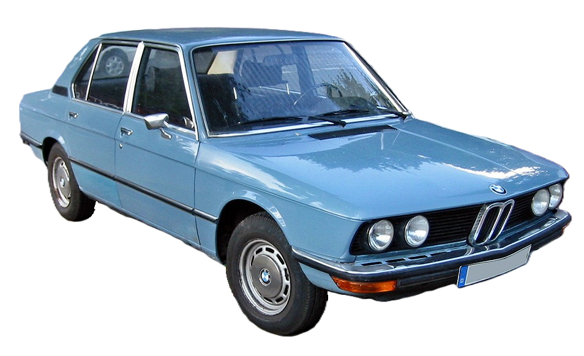

Bayerische Motoren Werke Aktiengesellschaft (BMW AG),[4] trading as BMW Group (commonly abbreviated to BMWx (German pronunciation: [ˌbeːʔɛmˈveː] ⓘ), sometimes anglicised as Bavarian Motor Works), is a German multinational conglomerate manufacturer of luxury vehicles and motorcycles headquartered in Munich, Germany. The moniker, "BMW ", first came into use when the German firm, Rapp Motorenwerke, changed its name to Bayerische Motoren Werke GmbH (BMW GmbH) in 1917. Thereafter, in 1922, the name and assets of BMW GmbH were transferred to the aircraft manufacturer, Bayerische Flugzeugwerke AG (formerly Otto Flugmaschinenfabrik), thereby giving rise to the company known today as BMW AG.[5][6]
BMW AG's automobiles are marketed under the BMW, Mini and Rolls-Royce brands while its motorcycles are marketed under the BMW Motorrad brand. In 2023, BMW became the world's ninth-largest producer of motor vehicles (with 2,555,341 vehicles made in that year alone)[7] as well as the 6th largest automaker by revenue.[8] In 2023, it was ranked 46th in the Forbes Global 2000.[9] The company also has significant motor-sport history, especially in touring cars, sports cars, and the Isle of Man TT.
BMW AG is headquartered in Munich and produces motor vehicles in Germany, the United Kingdom, the United States, Brazil, Mexico, South Africa, India, and China.[10] The Quandt family [de] is a long-term shareholder of the company, following investments by the brothers Herbert and Harald Quandt in 1959, saved BMW from bankruptcy, with remaining shares owned by the public.
The Otto Flugmaschinenfabrik was founded in 1910 by Gustav Otto in the Kingdom of Bavaria, which was a state of the German Empire. The firm was reorganized on 7 March 1916 into Bayerische Flugzeugwerke AG. This company was then renamed to Bayerische Motoren Werke (BMW) in 1922. However, the name BMW dates back to 1913, when a company using that name was founded by Karl Rapp initially as Rapp Motorenwerke. The name and Rapp Motorenwerke's engine-production assets were transferred to Bayerische Flugzeugwerke in 1922, who adopted the name the same year.[11] BMW's first product was an engine for fighter aircraft of the Luftstreitkräfte. It was a straight-six called the BMW IIIa, designed in the spring of 1917 by engineer Max Friz. Following the end of World War I, BMW remained in business by producing motorcycle engines, agricultural equipment, household items, and railway brakes. The company produced its first motorcycle, the BMW R 32, in 1923.
BMW became an automobile manufacturer in 1928 when it purchased Fahrzeugfabrik Eisenach, which, at the time, built the Austin 7 under licence from Automobilwerk Eisenach, badged as the Dixi.[12] The first car sold as a BMW was a rebadged Dixi called the BMW 3/15, following BMW's acquisition of the car manufacturer Automobilwerk Eisenach. Throughout the 1930s, BMW expanded its range into sports cars and larger luxury cars.[13][14]
Aircraft engines, motorcycles, and automobiles would be BMW's main products until World War II. During the war, BMW concentrated on building the BMW 801 aircraft engine using as many as 40,000 slave laborers.[15] These consisted primarily of prisoners from Nazi concentration camps, most prominently Dachau. Motorcycles remained as a side-line and automobile manufacture ceased altogether.
BMW's factories were heavily bombed during the war and its remaining West German facilities were banned from producing motor vehicles or aircraft after the war. The company survived by making pots, pans, and bicycles. In 1948, BMW restarted motorcycle production. BMW resumed car production in Bavaria in 1952 with the BMW 501 luxury saloon. The range of cars was expanded in 1955, through the production of the cheaper Isetta microcar under licence. Slow sales of luxury cars and small profit margins from microcars, meant BMW was in serious financial trouble and in 1959 the company was nearly taken over by rival Daimler-Benz.[16][17]
A large investment in BMW by Herbert Quandt and Harald Quandt resulted in the company surviving as a separate entity. Günther Quandt was a well-known German industrialist and joined the Nazi party in 1933; he made a fortune arming the German Wehrmacht, manufacturing weapons and batteries.[18] Many of his enterprises were appropriated from Jewish owners under duress with minimal compensation. At least three of his enterprises made extensive use of slave laborers, as many as 50,000 in all.[19] One of his battery factories had its own on-site concentration camp, complete with gallows. Life expectancy for laborers was six months.[19][20] While Quandt and BMW were not directly connected during the war, funds amassed in the Nazi era by his father allowed Herbert Quandt to buy BMW.[15]
The relative success of the small BMW 700 assisted in the company's recovery, allowing them to develop the New Class sedans.
BMW 5 Series(1 st generation)
The 1962 introduction of the BMW New Class compact sedans was the beginning of BMW's reputation as a leading manufacturer of sport-oriented cars. Throughout the 1960s, BMW expanded its range by adding coupé and luxury sedan models. The BMW 5 Series mid-size sedan range was introduced in 1972, followed by the BMW 3 Series compact sedans in 1975, the BMW 6 Series luxury coupés in 1976 and the BMW 7 Series large luxury sedans in 1978. The BMW M division released its first road car, the M1, a mid-engine supercar, in 1978. This was followed by the BMW M5 in 1984 and the BMW M3 in 1986. Also in 1986, BMW introduced its first V12 engine in the 750i luxury sedan. The 1989 BMW Z1 marked BMW's return to making a two-seat roadster, the 1995 BMW Z3 was their first mass-production two-seat roadster, and the 1999 BMW X5 was the company's first entry into the SUV market.
The company purchased the Rover Group in 1994, but the takeover was not successful and caused BMW large financial losses. In 2000, BMW sold off most of the Rover brands, retaining only the Mini brand. In 1998, BMW also acquired the rights to the Rolls-Royce brand from Vickers.
The first modern mass-produced turbocharged petrol engine was introduced in 2006 (from 1973 to 1975, BMW built 1,672 units of a turbocharged BMW M10 engine for the BMW 02 Series),[21] with most engines switching over to turbocharging over the 2010s. The first hybrid BMW was the 2010 BMW ActiveHybrid 7, and BMW's first mass-production electric car was the BMW i3 city car, which was released in 2013, (from 1968 to 1972, BMW built two battery-electric BMW 1602 Elektro saloons for the 1972 Olympic Games).[22] After many years of establishing a reputation for sporting rear-wheel drive cars, BMW's first front-wheel drive car was the 2014 BMW 2 Series Active Tourer multi-purpose vehicle (MPV).
n January 2021, BMW announced that its sales in 2020 fell by 8.4 percent due to the impact of COVID-19 pandemic restrictions. However, in the fourth quarter of 2020, BMW witnessed a rise of 3.2% in its customers' demands.[25] This recovery was supported by the company's adoption of widely accepted technologies and integration of third-party services such as Apple Pay and on-demand music as well as key partnerships such as its collaboration with Daimler on autonomous driving.[26][27] Additionally, BMW's strategic investment decisions which include localizing production of its SUVs to the Spartanburg plant in the U.S., placed the group in a position to easily navigate trade challenges and shifting consumer patterns.[26]
On 18 January 2022 BMW announced a BMW 7 Series (G11) special edition simply called "The Final V12",[28] the last BMW series production vehicle to be fitted with a V-12 engine.[28]
On 5 October 2023 it was announced that BMW UK CEO Chris Brownridge would succeed Torsten Müller-Ötvös as the CEO of Rolls-Royce starting 1 December 2023, as a result of Müller-Ötvös retiring.[29]
BMW is an abbreviation for Bayerische Motoren Werke. This name is grammatically incorrect (in German, compound words must not contain spaces), which is why the grammatically correct form of the name, Bayerische Motorenwerke (German pronunciation: [ˈbaɪʁɪʃə moˈtoːʁənˌvɛʁkə] ⓘ) has been used in several publications and advertisements in the past.[30][31] Bayerische Motorenwerke translates into English as Bavarian Motor Works.[32] The suffix AG, short for Aktiengesellschaft, signifies an incorporated entity owned by shareholders, thus akin to "Inc." (US) or PLC, "Public Limited Company" (UK).
The terms Beemer, Bimmer and Bee-em are sometimes used as slang for BMW in the English language[33][34] and are sometimes used interchangeably for cars and motorcycles.[35][36][37]
BMW badge on a 1931

The slogan 'The Ultimate Driving Machine' was coined by BMW North America in 1974,[44][45] and first used in ads celebrating their win at the 1975 12 Hours of Sebring.[46] In 2010, this long-lived campaign was mostly supplanted by a campaign intended to make the brand more approachable and to better appeal to women, 'Joy'. By 2012 BMW had returned to 'The Ultimate Driving Machine'.[47]
World Intellectual Property Organization (WIPO)’s Madrid Yearly Review ranked BMW's number of marks applications filled under the Madrid System as 2nd in the world, with 124 trademarks applications submitted during 2023.[48]
See also: BMW Motorrad and History of BMW motorcycles
BMW began production of motorcycle engines and then motorcycles after World War I.[61] Its motorcycle brand is now known as BMW Motorrad. Their first successful motorcycle after the failed Helios and Flink, was the "R32" in 1923, though production originally began in 1921.[62] This had a "boxer" twin engine, in which a cylinder projects into the air-flow from each side of the machine. Apart from their single-cylinder models (basically to the same pattern), all their motorcycles used this distinctive layout until the early 1980s. Many BMW's are still produced in this layout, which is designated the R Series.
The R32 motorcycle, the first BMW motor vehicle, at the BMW Museum in Munich

The entire BMW Motorcycle production has, since 1969, been located at the company's Berlin-Spandau factory. During the Second World War, BMW produced the BMW R75 motorcycle with a motor-driven sidecar attached, combined with a lockable differential, this made the vehicle very capable off-road.[63] In 1982, came the K Series, shaft drive but water-cooled and with either three or four cylinders mounted in a straight line from front to back. Shortly after, BMW also started making the chain-driven F and G series with single and parallel twin Rotax engines.
In the early 1990s, BMW updated the airhead Boxer engine which became known as the oilhead. In 2002, the oilhead engine had two spark plugs per cylinder. In 2004 it added a built-in balance shaft, an increased capacity to 1,170 cc (71 cu in) and enhanced performance to 75 kW (101 hp) for the R1200GS, compared to 63 kW (84 hp) of the previous R1150GS. More powerful variants of the oilhead engines are available in the R1100S and R1200S, producing 73 and 91 kW (98 and 122 hp), respectively.
BMW introduced anti-lock brakes on production motorcycles starting in the late 1980s. The generation of anti-lock brakes available on the 2006 and later BMW motorcycles paved the way for the introduction of electronic stability control, or anti-skid technology later in the 2007 model year.
BMW has been an innovator in motorcycle suspension design, taking up telescopic front suspension long before most other manufacturers. Then they switched to an Earles fork, front suspension by swinging fork (1955 to 1969). Most modern BMWs are truly rear swingarm, single sided at the back (compare with the regular swinging fork usually, and wrongly, called swinging arm). Some BMWs started using yet another trademark front suspension design, the Telelever, in the early 1990s. Like the Earles fork, the Telelever significantly reduces dive under braking.[64]
BMW Group, on 31 January 2013, announced that Pierer Industrie AG has bought Husqvarna Motorcycles for an undisclosed amount, which will not be revealed by either party in the future. The company is headed by Stephan Pierer (CEO of KTM). Pierer Industrie AG is 51% owner of KTM and 100% owner of Husqvarna.
In September 2018, BMW unveiled a new self-driving motorcycle with BMW Motorrad with a goal of using the technology to help improve road safety.[65] The design of the bike was inspired by the company's BMW R1200 GS model.[66]
See also: List of BMW vehicles, Mini (marque), and Rolls-Royce Motor Cars
The current model lines of BMW cars are: